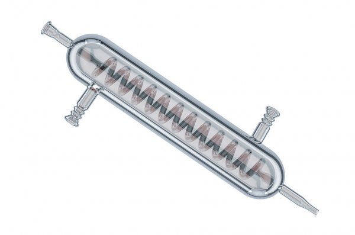
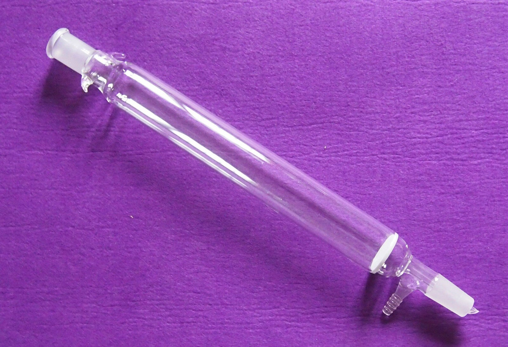
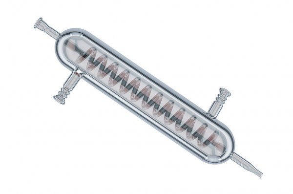
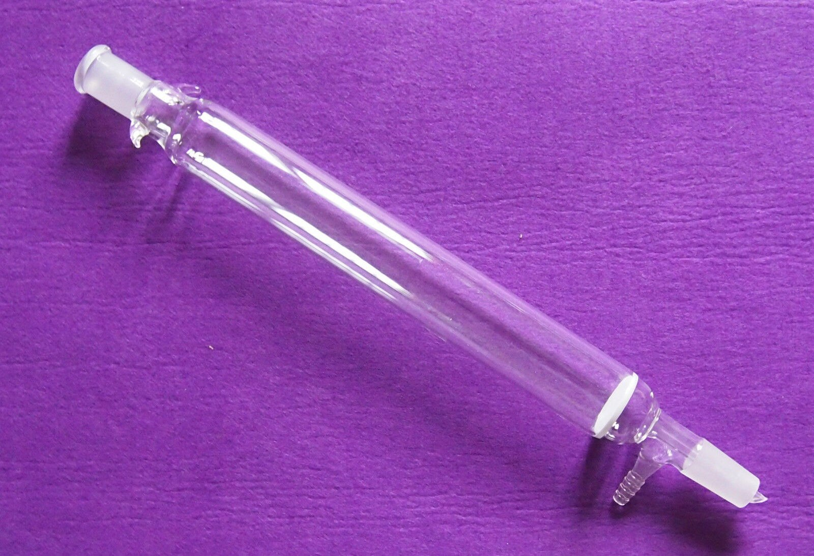

Klasifikasi Materi dan Perubahannya

Pemisahan campuran
Pertanyaan
- Jawablah pertanyaan berikut ini!
- Pertanyaan ini terdiri dari 4 soal pilihan ganda
- Anda diminta memilih jawaban yang benar diantara pilihan jawaban
- Jika jawaban anda benar, maka akan tampil pembahasan dan keterangan jawaban benar
- Jika jawaban anda salah, maka akan tampil pembahasan dan keterangan jawaban salah
- Jika ingin mengulang menjawab pertanyaan, silahkan tekan tombol 'Ulang'
- Jika ingin melanjutkan menjawab pertanyaan, silahkan tekan tombol 'Selanjutnya' pada nomor soal
- Jika ingin kembali ke pertanyaan sebelumnya, silahkan tekan tombol 'Sebelumnya' pada nomor soal
- Di bawah ini yang menjadi keunggulan pemisahan campuran metode kromatografi adalah ...
(silahkan pilih 2 pilihan)
Pembahasan:
Keunggulan pemisahan metode kromatografi adalah Dapat memisahkan bagian-bagian kecil yang tercampur di dalam campuran dan Dapat menguji setiap bagian yang tercampur dalam campuran.
Petunjuk:
Silahkan pilih kembali jawaban yang benar
- Perhatikan peralatan lab di bawah ini!
 


(Corong kaca) (Gelas kimia) (Kondensor) (Kolom kimia)
Pada gambar di atas, alat yang dapat digunakan dalam pemisahan campuran metode kromatografi adalah ...
- Corong kaca dan kolom kimia
- Gelas kimia dan kondensor
- Kolom kimia dan gelas kimia
- Kondensor dan kolom kimia
Pembahasan:
Pada gambar di atas, alat yang dapat digunakan dalam pemisahan campuran metode kromatografi adalah kolom kimia dan gelas kimia.
Petunjuk:
Silahkan tekan tombol ulang
- Perhatikan gambar berikut ini!

Berdasarkan gambar di atas, prinsip kerja dari pemisahan campuran dengan menggunakan metode kromatografi adalah ...
- Kemampuan daya tahan dari materi yang tercampur
- Kemampuan daya serap dari materi yang tercampur
- Kemampuan daya serang dari materi yang tercampur
- Kemampuan daya rambat dari materi yang tercampur
Pembahasan:
Metode pemisahan campuran metode kromatografi merupakan pemisahan campuran yang didasarkan pada perbedaan kecepatan rambatan suatu komponen yang tercampur dalam campuran.
Petunjuk:
Silahkan tekan tombol ulang.
- Di bawah ini, yang merupakan pernyataan yang tepat tentang kromatografi kolom adalah ...
(silahkan pilih 2 pilihan)
Pembahasan:
Pernyataan yang tepat tentang kromatografi kolom adalah Fase diam pada kromatografi kolom berupa materi berwujud padatan dan Pemisahan komponen campuran dilakukan di dalam tabung.
Petunjuk:
Silahkan pilih kembali jawaban yang benar!